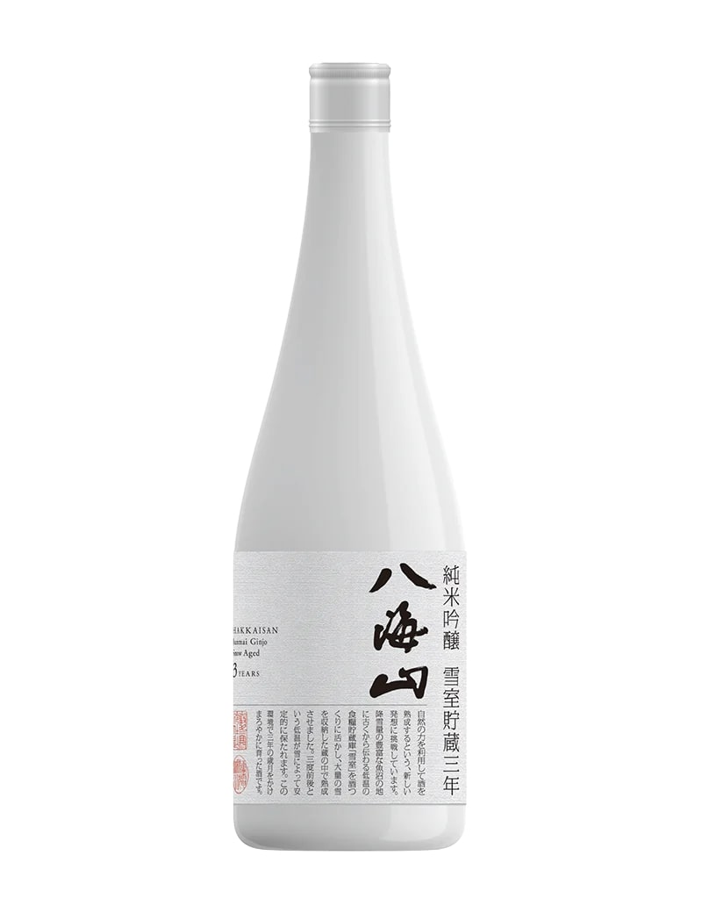
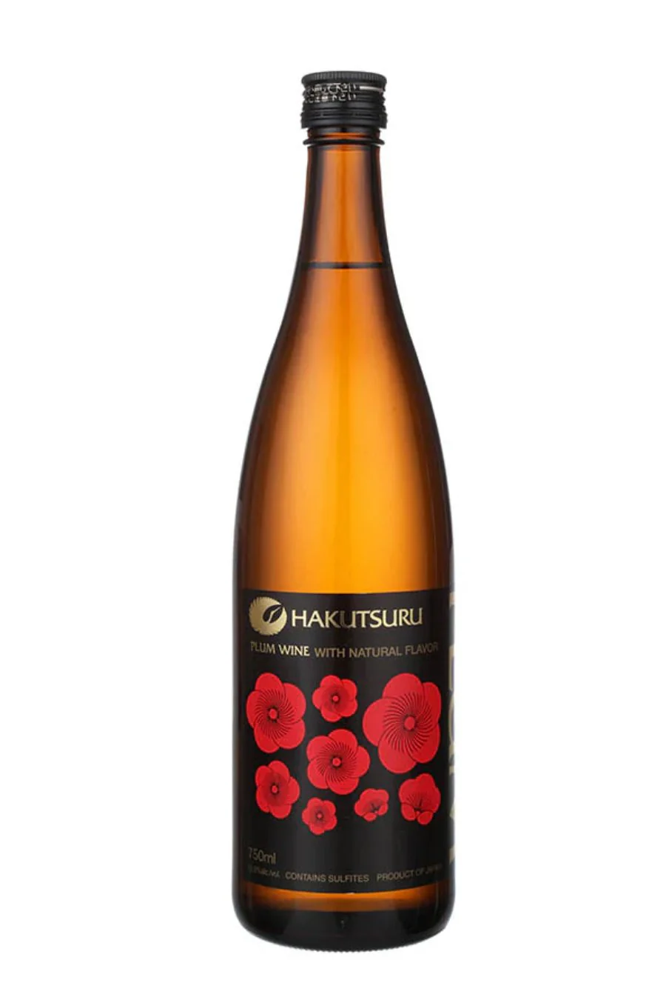

Sake & Beverage Selection
Sake Brewed in USA

Dassai Blue 50 Junmai Daiginjo
A clean and modern sake brewed at Dassai’s Hudson Valley brewery. Soft notes of melon and pineapple with gentle sweetness and a smooth, refreshing finish. Elegant and extremely easy to drink.
OriginHyde Park, New York
Rice Polishing Ratio50%
Alcohol Content14%
Serving TempChilled
$85 (720ml) | $45 (375ml)

Dassai Blue 35 Junmai Daiginjo
A highly polished American-brewed Dassai refined to 35%. Elegant melon and floral notes with a soft sweetness and silky, refined finish. Smooth and beautifully balanced.
OriginHyde Park, New York
Rice Polishing Ratio35%
Alcohol Content14%
Serving TempChilled
$65 (375ml)
Sake From Japan

Dassai 45 Junmai Daiginjo
Chewy and full of body. Light honeydew aromas with the subtle sweetness of muscat grapes, complemented by an undercurrent of crisp dryness. Reminiscent of white wine in the best possible way.
OriginYamaguchi Prefecture, Japan
Rice Polishing Ratio45%
SMV+3 (Slightly Dry)
Acidity1.4
Serving TempChilled
$70 (720ml) | $35 (300ml)

Dassai 39 Junmai Daiginjo
A luxurious sake with a soft, elegant aroma of melon, peach, and white flowers. Smooth and silky texture with a delicate sweetness balanced by a clean, crisp finish.
OriginYamaguchi Prefecture, Japan
Rice Polishing Ratio39%
Alcohol Content16%
SMV+3 (Slightly Dry)
Acidity1.3
Serving TempChilled
$105 (720ml) | $48 (300ml)

Dassai 23 Junmai Daiginjo (300ml)
An ultra-premium sake polished down to an extraordinary 23%, offering a silky, refined texture with elegant floral aromas and a clean, lingering finish.
OriginYamaguchi Prefecture, Japan
Rice Polishing Ratio23%
Alcohol Content16%
SMV+4 (Dry)
Acidity1.3
Serving TempChilled
$75 (300ml)

Kubota Junmai Daiginjo
A refined sake with a clean finish. Delicate notes of pear and apple create a light, refreshing profile, perfect for subtle dishes.
OriginNiigata Prefecture, Japan
Rice Polishing Ratio50%
SMV+2 (Slightly Dry)
Acidity1.3
Serving TempChilled
$78 (720ml) | $38 (300ml)

Kubota Manjyu Junmai Daiginjo
The pinnacle of the Kubota sake line — elegant, refined, and beautifully balanced. Aromas of melon and pear lead to a silky, smooth body with delicate sweetness and a pristine, lingering finish.
OriginNiigata Prefecture, Japan
Rice Polishing Ratio50%
Alcohol Content15%
SMV+2 (Slightly Dry)
Acidity1.2
Serving TempChilled
$145 (720ml)

Hakkaisan 45 Junmai Daiginjo
A refined sake with a restrained and delicate aroma, offering hints of steamed rice with the barest touch of florality and earthiness. The first sip evokes a gentle rice flavor with a pristine and invigorating dry finish.
OriginNiigata Prefecture, Japan
Rice Polishing Ratio45%
Alcohol Content16%
SMV+5 (Dry)
Acidity1.2
Serving TempChilled
$89 (720ml) | $42 (300ml)

Hakkaisan Yukimuro 3 Year Aged Junmai Daiginjo
A beautifully balanced sake aged for three years in snow-cooled cellars. Crisp yet refined, with subtle notes of pear, rice, and a clean, graceful finish.
OriginNiigata Prefecture, Japan
Rice Polishing Ratio45%
Alcohol Content16%
Aging3 Years (Snow Aged)
Serving TempChilled
$135 (720ml)

Hakkaisan Yukimuro Snow Aged 8 Years Junmai Daiginjo
A rare and luxurious sake aged for eight years in a traditional snow-cooled room. Exceptionally smooth and mellow with deep umami, soft sweetness, and a lingering elegant finish.
OriginNiigata Prefecture, Japan
Rice Polishing Ratio40%
Alcohol Content17%
Aging8 Years (Snow Aged)
Serving TempChilled
$230 (720ml)

Yuzu Omoi Sake
A refreshing citrus-infused sake with a sweet-tart balance. Bright yuzu flavors make it a perfect companion for lighter fare.
OriginAkita Prefecture, Japan
TypeYuzushu (Citrus-infused Sake)
Alcohol Content8%
Serving TempChilled
$32

Nihon Sakari Yuzu
A vibrant yuzu-infused sake with a bright, citrusy profile. Its sweet-tart balance and refreshing finish make it an ideal aperitif or pairing for light dishes.
OriginHyogo Prefecture, Japan
TypeYuzushu (Citrus-infused Sake)
Alcohol Content10%
Serving TempChilled or On the Rocks
$76 (700ml) | $32 (300ml)

Suigei “Drunken Whale” Tokubetsu Junmai (720ml)
A dry sake with a clean, crisp profile. Subtle umami notes make it a versatile pairing for richer dishes.
OriginKochi Prefecture, Japan
Rice Polishing Ratio55%
SMV+5 (Dry)
Acidity1.6
Serving TempRoom Temperature or Warm
$65

Hakutsuru Junmai Dai Ginjo Sho-Une Premium Sake (300ml)
A supreme sake with a velvety smooth texture. Fruity aromas of white peach and pear create a deeply complex yet easy-drinking profile.
OriginHyogo Prefecture, Japan
Rice Polishing Ratio50%
Alcohol Content15.5%
Serving TempChilled or Room Temperature
$42
Plum Wine

Hakutsuru Plum Wine
A sweet and tart plum wine with rich ume fruit flavors. Its balanced sweetness and refreshing acidity make it a delightful aperitif or dessert wine.
OriginHyogo Prefecture, Japan
TypeUmeshu (Plum Wine)
Alcohol Content12.5%
Serving TempChilled or On the Rocks
$48 (750ml)
Beer

Sapporo Premium Beer (12 Oz)
A refreshing lager with a crisp, refined flavor and a clean finish—ideal for any occasion.
OriginUSA
ABV4.9%
Calories140
Carbohydrates10.3 grams
$8

Kirin Ichiban Premium Beer (12 Oz)
A smooth, clean lager brewed using a unique “first-press” method, delivering gentle malt sweetness and a crisp finish.
OriginUSA
ABV5.0%
Calories145
Carbohydrates10.0 grams
$10
Beverages

S.Pellegrino Sparkling Water (20 Oz)
A crisp and clean sparkling water with fine bubbles, perfect for refreshing the palate.
OriginSan Pellegrino Terme, Italy
$5

Saratoga Sparkling Water (12 Oz)
A premium carbonated spring water with fine bubbles, offering a crisp and refreshing taste.
OriginSaratoga Springs, USA
Since1872
$5.5

Hot Green Tea
A traditional Japanese green tea with a fresh, grassy flavor and a slightly astringent finish.
OriginJapan
TypeSencha Green Tea
Serving TempHot
$4